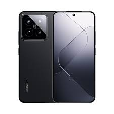

Xiaomi 14 vs Google Pixel 8 Pro: In-Depth Flagship Smartphone Comparison

Introduction: The Clash of Different Flagship Philosophies
The smartphone landscape has entered a fascinating era where raw hardware metrics alone no longer dictate true superiority. Instead, the focus has shifted heavily toward computational photography, tailored form factors, and artificial intelligence integration. The comparison between the Xiaomi 14 and the Google Pixel 8 Pro highlights this shift perfectly. These two devices represent fundamentally different visions of what a premium, high-tier device should offer its user.
Xiaomi has traditionally approached the mobile market with an unyielding emphasis on dense hardware packages: fitting massive sensors, unmatched charging architectures, and high-frequency silicone into highly efficient footprints. The standard Xiaomi 14 challenges the norm by keeping a relatively compact form factor without sacrificing internal performance. On the other side of the ring, Google treats the Pixel 8 Pro as the pristine canvas for its ambient computing future. Rather than winning benchmark marathons, the Pixel 8 Pro aims to redefine software longevity, raw photo accuracy, and real-world intelligence pipelines powered directly by local neural hardware.
This comparison moves away from superficial rating metrics to analyze how both setups respond under demanding daily stress patterns. Whether you find yourself leaning toward the immediate performance response of the Snapdragon platform or the intricate machine learning software suite developed in Mountain View, this deep dive offers a natural, highly objective breakdown for consumers seeking absolute clarity before upgrading.
1. Form Factor, Build Quality, and Ergonomic Realities
Holding these two smartphones reveals an immediate contrast in physical footprint and handling philosophy. The Xiaomi 14 is a rare gem in the premium space—a truly compact flagship. Featuring a modest screen real estate profile, it fits comfortably within a single hand. Its straight edges and glossy aluminum frame offer a secure grip, though the polished finish does attract fingerprints easily. The camera housing on the back is a bold, square module that adds substantial thickness to the upper half, yet the overall distribution of weight prevents the phone from feeling top-heavy during prolonged typing intervals.
Conversely, the Google Pixel 8 Pro is undeniably a large-format device. It embraces its expansive dimensions by integrating the iconic camera visor strip across its upper rear panel. This horizontal layout provides a unique benefit: unlike corner-mounted camera configurations, the Pixel rests perfectly flat on horizontal surfaces without wobbling when you type. The matte glass back panel feels remarkably soft and cleanly repels oil buildup, though the polished frame can be somewhat slippery without a protective case. Due to its sheer volume, operating the Pixel 8 Pro single-handed requires constant finger adjustments.
Both models feature full IP68 water and dust isolation ratings, ensuring that everyday submersions or dusty environments present no real hazard. If portability and pocket comfort rank high on your shopping priority list, Xiaomi secures an early ergonomic lead. However, if you prefer the structural stability of a wider chassis that commands a strong visual presence, Google's iconic aesthetic design delivers an exceptional tactile experience.
2. Screen Quality, Visibility, and Refresh Control
The display panel serves as your primary window into the device, making color precision and outdoor brightness absolutely vital. The Xiaomi 14 implements a flat custom display panel boasting an impressive pixel density. Thanks to LTPO layer technology, it switches dynamically between low frequencies to preserve battery power and fluid speeds for high-velocity system transitions. Outdoor visibility is phenomenal, easily overcoming bright afternoon sunlight without washing out contrast levels. Color rendering leans toward deep contrast, though users can easily recalibrate the temperature within the advanced settings menu.
Google counters with its high-end Super Actua display matrix. This panel is remarkably uniform, completely flat, and achieves extraordinary clarity. The standout feature here is the real-world color mapping. Google focuses on natural, life-like reproduction, which directly mirrors how raw photographs look prior to post-processing. The extreme peak brightness of the Actua display ensures that even under direct glare, checking maps or reviewing documents feels effortless. Furthermore, the wider aspect ratio provides ample horizontal room, minimizing text wrapping when reading long articles.
When evaluating high-frequency flickers or panel dimming cycles, both companies employ high-frequency PWM dimming technologies to reduce eye fatigue during late-night reading sessions. Xiaomi's panel feels tighter and sharper due to the smaller screen layout compressing the native resolution. Google, meanwhile, relies on sheer scale and unmatched color neutralism to win over users who consume heavy amounts of media and visual documents daily.
3. Hardware Capabilities, Chipsets, and Thermal Dynamics
Beneath the glass hoods lies a major divergence in processing strategies. The Xiaomi 14 comes armed with the Qualcomm Snapdragon 8 Gen 3 chipset. This processor is an absolute powerhouse. Built on an advanced manufacturing node, its architectural setup prioritizes raw processing muscle. System navigation feels instantaneous, app launches occur without a hint of hesitation, and heavy 3D rendering tasks run smoothly over long periods. Thermal regulation is managed by a specialized ice-loop vapor cooling structure that spreads internal heat away from the core frame efficiently, maintaining consistent frame rates without aggressive thermal throttling.
Google chooses a customized route by relying on its proprietary Tensor G3 silicon. This system-on-chip is not built to chase extreme graphic milestones or win simulated hardware benchmarks. Instead, its internal components are tailored around specialized neural nodes designed to process complex algorithmic equations locally. For standard tasks like scrolling social feeds, managing background productivity tools, and multitasking, the Tensor G3 operates smoothly. However, under prolonged, intensive mobile gaming loads, the device runs visibly warmer than the Snapdragon platform, and the frame rates will scale down slightly to protect the battery cell from excessive heat stress.
This structural difference means that users who demand uncompromising local computing power—such as heavy mobile video editors or hardcore open-world mobile gamers—will find the Xiaomi 14 to be a superior computational engine. The Pixel 8 Pro targets a user who values smart ambient automation, real-time audio scrubbing, and constant background calculations over sheer processing muscle.
4. Technical Specifications Comparison Table
To help visualize how these two flagship devices stack up objectively, here is a detailed technical specifications table:
| Feature Architecture | Xiaomi 14 (Global) | Google Pixel 8 Pro |
|---|---|---|
| Central Processor | Qualcomm Snapdragon 8 Gen 3 | Google Tensor G3 (Titan M2 Security) |
| Display Layer | 6.36-inch LTPO OLED (120Hz) | 6.7-inch Super Actua LTPO (120Hz) |
| Resolution Metrics | 2670 x 1200 pixels (460 ppi) | 2992 x 1344 pixels (489 ppi) |
| Primary Camera System | 50 MP Light Fusion 900 (Leica Summilux) | 50 MP Octa PD Wide (f/1.68) |
| Telephoto Zoom | 50 MP Floating Lens (3.2x Optical) | 48 MP Quad PD (5x Optical Zoom) |
| Ultrawide Camera | 50 MP Ultra-Wide (115° FOV) | 48 MP Quad PD with Macro Focus |
| Battery Capacity | 4610 mAh lithium-polymer | 5050 mAh lithium-ion |
| Wired Charging Speed | 120W HyperCharge (In-box block) | 30W USB-PD Charging Architecture |
| Wireless Charging | 50W Wireless Charging Support | 23W Stand Integration Support |
| Software Policy | 4 Android OS Upgrades (HyperOS) | 7 Years of OS, Security, & Feature Drops |
5. Artificial Intelligence and Ambient Software Ecosystems
Artificial intelligence integration has grown into a major selling point for modern flagship smartphones. Google has positioned itself at the forefront of this movement. The Pixel 8 Pro processes a massive array of features directly on-device without needing a constant cloud server handshake. Features like Magic Eraser and Best Take allow users to alter group portraits by swapping facial expressions from a series of photos seamlessly. Additionally, Audio Magic Eraser separates background noise layers from captured video clips, isolating human voices from city sirens or heavy wind gusts. The system's contextual text transcription and live voice-call filtering options remain the gold standard for office productivity tools.
Xiaomi takes a more utility-driven approach with its new HyperOS platform. Rather than offering complex creative manipulation suites, Xiaomi uses its machine learning capabilities to optimize background performance. The system analyzes your usage patterns to pre-load frequently accessed applications, manages memory allocation efficiently, and uses low-level code routines to maximize standby power. While it lacks the advanced image-generation tools found on the Pixel, Xiaomi's AI excels at cross-device automation within its vast smart-home product ecosystem, making it a powerful hub if you own other compatible appliances.
For users who want their smartphone to serve as an active AI assistant—capable of drafting text summaries, proofreading documents, and modifying media creatively—the Pixel 8 Pro delivers an incredibly forward-thinking experience. Xiaomi’s software appeals to those who prefer an understated system that works silently behind the scenes to maintain processing speeds and connection stability over time.
6. Charging Infrastructure and Real-World Power Delivery
Battery capacity tells only half the story; how quickly a device can top up its cell fundamentally alters your daily relationship with power outlets. This is where a massive performance gap between Chinese and American engineering models becomes apparent.
The Xiaomi 14 is an absolute titan in terms of charging speeds. Supporting proprietary 120W HyperCharge technology, it can fill its battery cell from empty to full in less than twenty minutes. This completely changes how you manage your battery; instead of leaving your phone plugged in overnight, a quick plug-in while you get ready in the morning easily provides enough power for the entire day. Even better, Xiaomi includes the high-speed charging brick right in the retail box, saving you from any hidden accessory costs.
Google follows a much more conservative charging path with the Pixel 8 Pro, capping wired intake speeds at 30W. Recharging its large battery cell from zero to full takes over an hour and a half. This slower rate requires a more traditional approach to power management, making overnight charging or regular workplace top-ups a necessity. While Google argues that slower speeds help extend the overall lifespan of the chemical battery, the convenience of Xiaomi’s rapid charging is undeniable for busy, on-the-go lifestyles.
7. Camera System Deep Dive: Optical Hardware vs. Computational Code
Photography remains one of the primary arenas where these two companies fight for dominance. Xiaomi’s partnership with Leica brings legendary optical heritage to the compact 14. The primary sensor uses custom-engineered Summilux lenses with an exceptionally wide aperture. This allows a massive amount of physical light to reach the sensor naturally, producing organic background blur without relying on artificial portrait software filters. Users can select between two distinct color rendering modes: Leica Authentic, which preserves moody shadows and classic color contrasts, or Leica Vibrant, which punches up saturation levels for social-media-ready shots.
Google relies on its advanced computational processing engine to deliver stunning results. The Pixel 8 Pro captures images with an incredibly balanced dynamic range. When shooting against bright backlights, Google’s HDR algorithms perfectly lift deep shadows while preserving bright highlights that would typically clip on lesser sensors. Its 5x optical telephoto lens provides outstanding clarity at long distances, outclassing Xiaomi’s 3.2x portrait zoom lens when capturing distant architectural elements or landscape details. Night Sight mode remains exceptional, using multiple exposure stitching to reveal vibrant colors and clean details in near-total darkness.
For video recording, Xiaomi leverages its high-speed processor to offer smooth 8K capture and high-frame-rate options that look incredibly crisp. Google counters with Video Boost, a cloud-assisted rendering process that applies advanced HDR algorithms directly to video files. This results in unmatched stabilization and low-light video performance, though processing the files can take some time. If you prefer rich, artistic contrast and tactile lens control, Xiaomi’s Leica system is incredibly satisfying. For reliable point-and-shoot accuracy across tricky lighting conditions, Google's computational pipeline holds a slim edge.
8. Final Verdict: Match Your Daily Priorities
Choosing between these two incredible mobile platforms ultimately comes down to identifying which features integrate best with your personal lifestyle and daily workflows. Both devices offer an exceptional experience but cater to very different user preferences.
Choose the Xiaomi 14 if you want:
- A compact, pocket-friendly flagship that handles beautifully with one hand.
- Unmatched charging speeds that take you from empty to full in under 20 minutes.
- The raw gaming performance and efficient cooling of the Snapdragon 8 Gen 3 platform.
- Classic Leica color profiles with excellent native depth of field.
Choose the Pixel 8 Pro if you want:
- An expansive screen ideal for consuming media, reading, and running split-screen apps.
- Cutting-edge AI tools for advanced photo editing and real-time voice processing.
- A clean, bloatware-free Android experience with a market-leading 7-year update guarantee.
- Exceptional 5x optical zoom performance for crisp long-distance photography.
The Google Pixel 8 Pro earns our recommendation for users prioritizing long-term software support, reliable point-and-shoot computational photography, and an extensive suite of smart AI tools. However, if you value lightning-fast charging, raw gaming performance, and compact ergonomics, the Xiaomi 14 stands out as a hardware powerhouse that is incredibly tough to beat.
For more detailed breakdowns, hands-on reviews, and comprehensive mobile evaluations, be sure to explore our dedicated analysis archives on the Ranking Hours Bosh Sahifasi. Our objective assessments are designed to help you make informed decisions about your next tech upgrade.